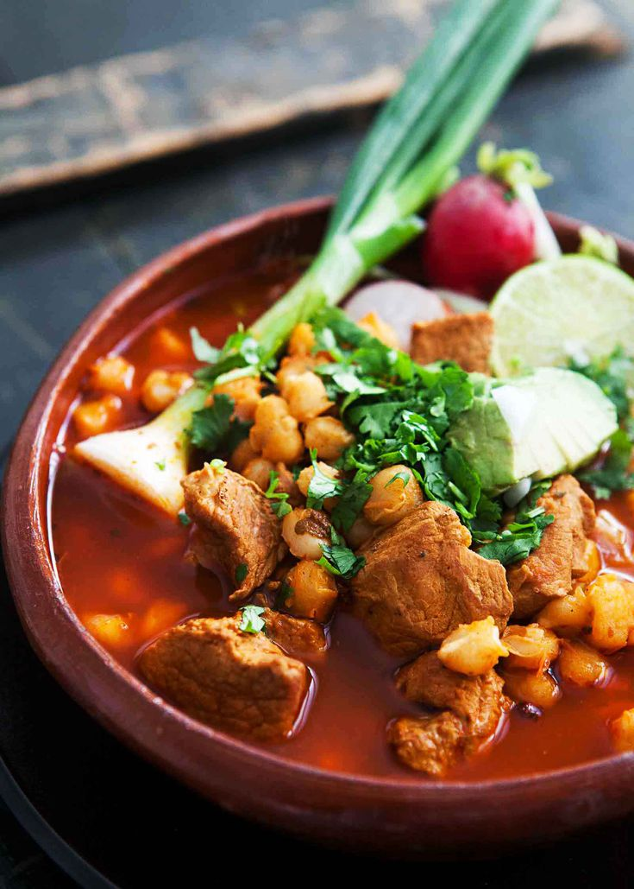

Posole

Description
This is a recipe for Posole Rojo, an authentic Mexican pork and hominy stew.
Ingredients:
- 4 oz dried guajillo and ancho chiles
- 1 108 oz can of white hominy
- 3 pounds pork shoulder
- 8 cloves of garlic
- 3 bay leaves
- 1 teaspoon ground cumin
- 2 tablespoons dried oregano
Steps:
- Boil 5 quarts of water.
- Heat the chiles, covered in 3 cups of water.
- Brown the pork in a pan with olive oil and garlic.
- In a large pot of boiling water, add the pork and spices.
- Prepare the red sauce
- Add the red chili sauce into the pot with the pork and hominy.
- Cook for 2-3 hours until the pork is tender.